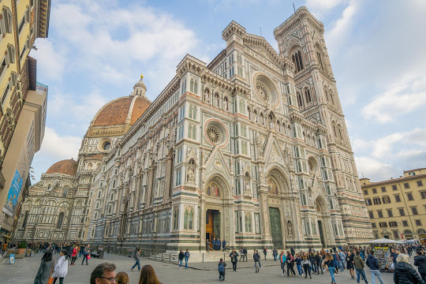
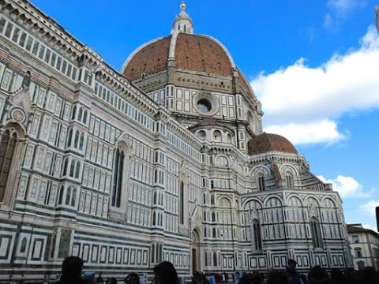

Florence, capital of Italy’s Tuscany region, is home to many masterpieces of Renaissance art and architecture. One of its most iconic sights is the Duomo, a cathedral with a terracotta-tiled dome engineered by Brunelleschi and a bell tower by Giotto. The Galleria dell'Accademia displays Michelangelo’s “David” sculpture. The Uffizi Gallery exhibits Botticelli’s “The Birth of Venus” and da Vinci’s “Annunciation.”
Another architectural highlight is the Ponte Vecchio, a medieval stone-arch pedestrian bridge that’s packed with jewelry stores. Near the bridge, on the south bank of the Arno River, is massive Palazzo Pitti, once home to the powerful Medici family, showing works by such renowned artists as Raphael and Titian. On the north bank, the Piazza del Signoria is one the city’s most visited squares thanks to the imposing Palazzo Vecchio (the town hall) and the much-photographed statue “Perseus with the Head of Medusa” by Cellini.
